Jonathan Joestar is the first JoJo of the bloodline and marks the
start of the "bizzare" adventure. He is a gentleman and was born into
wealth.
Dio Brando is the main villain of JJBA Part 1 and 3. He gets into the
Joestar household when his father gives him a letter that is
essentially an "IOU" for Dio's father saving Jonathan's dad's life.
Ever since then, Dio makes Jonathan's life extremely difficult by
doing ruthless things like kissing his girlfriend (without consent)
and killing his dog.
Joseph Joestar is the second JoJo of the bloodline and is the grandson
of Jonathan and fights 3 Aztec Gods throughout his part. He comes back
in part 3 and part 4 with a new stand but is older with each part. His
stand is Hermit Purple, named after the tarot card.
Kars is the main villain of JJBA Part 2. He is one of the four main
pillar men consisting of Kars, Esidisi, Wamuu, and Santana. They are
named after western bands (Cars, AC/DC, WHAM!, and Santana). His goal
was to become the ultimate lifeform. Also, to be able to conquer the
sun because pillar men are extremely vulnerable to sunlight (like
vampires).
Jotaro Kujo is the third JoJo of the bloodline and is the son of
Joseph's daugther. He fights DIO after 100 years of him sleeping
underwater in his coffin. DIO activates the stands in their bloodline
which ends up making Jotaro's mom sick. He must find and kill DIO
before the stand kills his mom. His stand is Star Platinum, named
after the tarot card.
DIO is the main villain of JJBA Part 3. After the events of part 1, he
ended up in a coffin at the bottom of the sea, healing by attaching
his head to Jonathan's body. He discovers the stand arrow and pierces
himself with it which causes him to manifest a stand. This also causes
the rest of the Joestar bloodline to manifest a stand. He is at Egypt
for this whole part trying to find Heaven. His stand is The World,
named after the tarot card.
Josuke Higashkita is the fourth JoJo of the bloodline and is the son
of joseph. He is looking for a serial killer who is in his town
causing havoc all the while finding new friends and fighting villains
along the way. His stand is Crazy Diamond, named after the song "Shine
On You Crazy Diamond" by Pink Floyd.
Kira is the main villain of JJBA Part 4. He is a serial killer in the
small town of Morioh. One of his famous lines is: "My name is
Yoshikage Kira. I'm 33 years old. My house is in the northeast section
of Morioh, where all the villas are, and I am not married. I work as
an employee for the Kame Yu department stores, and I get home every
day by 8 PM at the latest. I don't smoke, but I occasionally drink.
I'm in bed by 11 PM, and make sure I get eight hours of sleep, no
matter what. After having a glass of warm milk and doing about twenty
minutes of stretches before going to bed, I usually have no problems
sleeping until morning. Just like a baby, I wake up without any
fatigue or stress in the morning. I was told there were no issues at
my last check-up. I'm trying to explain that I'm a person who wishes
to live a very quiet life. I take care not to trouble myself with any
enemies, like winning and losing, that would cause me to lose sleep at
night. That is how I deal with society, and I know that is what brings
me happiness. Although, if I were to fight I wouldn't lose to anyone."
His stand is Killer Queen and has abilities called Sheer Heart Attack
and Bites the Dust. The stand is named after Queen's songs.
Giorno Giovanna is the fifth JoJo of the bloodline and is the son of
DIO after he took Jonathan's body! This makes him (technically) a
Joestar! He is in Italy and wants to become a Ganstar. His stand is
Gold Experience, named after the album "Gold Experience" by Prince. In
the final episodes, Giorno gets pierced by a stand arrow and in
result, his stand evolves into Gold Experience Requiem and develops a
new ablity.
Diavolo is the main villain of JJBA part 5. He is the big mafia boss
of the mafia organization known as Passione and keeps himself a
mystery. He has a daughter who joins the main protagonist's group. He
has DID and has an innocent alter-ego named Doppio that acts as a
loyal suborinate to Diavolo, doing whatever he tells him to do. His
stand is King Crimson, named after the band King Crimson.
Jolyne Cujoh is the sixth JoJo of the bloodline and marks the end of
the main story of JoJo's Bizzare Adventure with a world reset in a
world that the JoJos aren't cursed with their bloodline. During this
part she is framed for a murder and sent to Jail when her father,
Jotaro, comes to break her out of prison. Her stand is called Stone
Free
Pucci is the main villain of JJBA part 6. He is Green Dolphin prison's
Priest and is trying to fufill DIO's quest to find Heaven. He does so
by using his stand to steal Jolyne's Father, Jotaro's, memory disks to
see where he put DIO's instructions on how to accquire heaven. His
first stand is Whitesnake, name after the band Whitesnake. His second
stand is C-Moon, named after the song "C-Moon" by Paul McCartney and
Wings. Lastly, his third stand is Made in Heaven, was initially named
after "Stairway to Heaven" by Led Zeppelin but was changed to "Made in
Heaven" by Queen.
 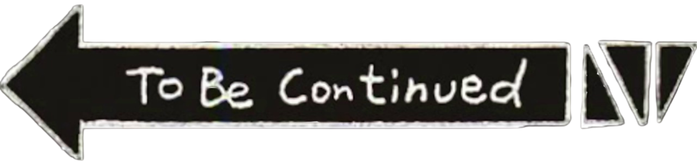
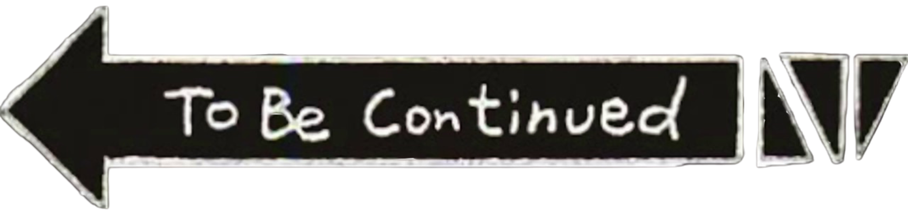
 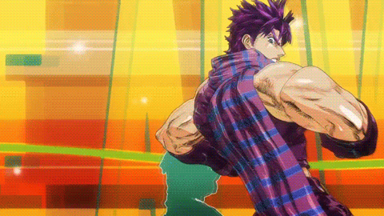
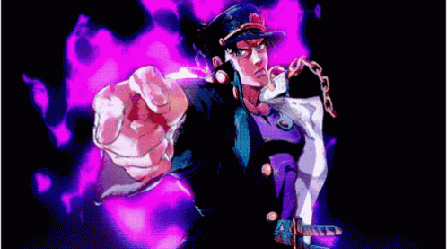
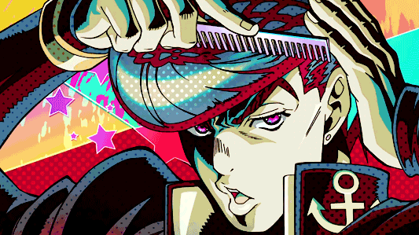
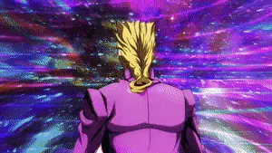
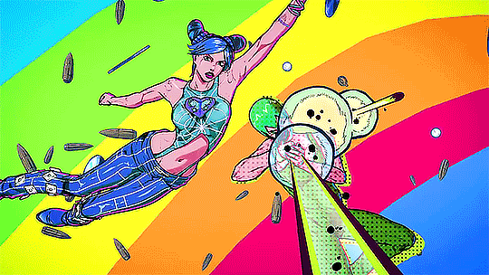
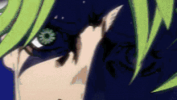
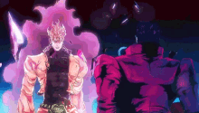
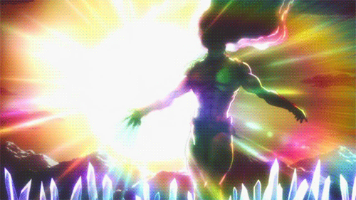
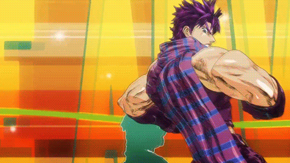
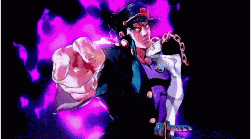
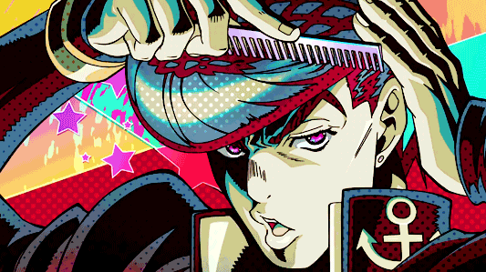
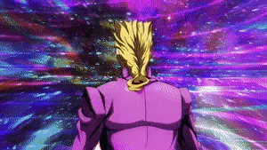
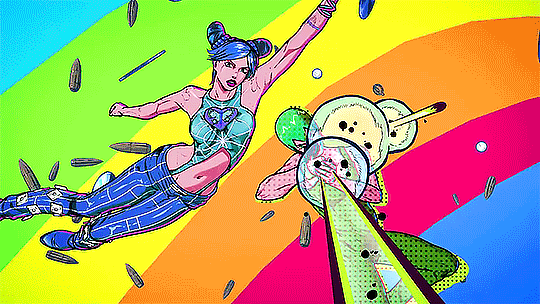
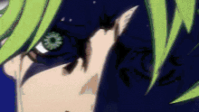
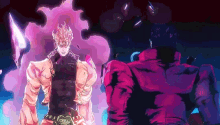
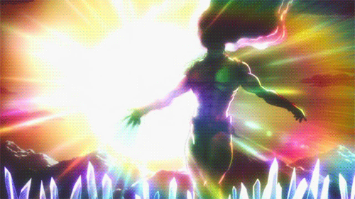
 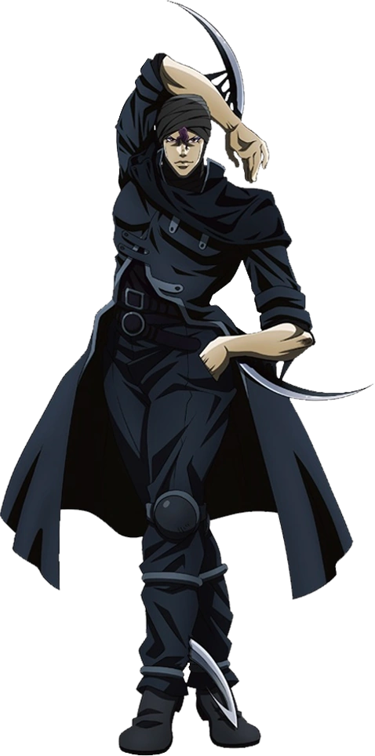
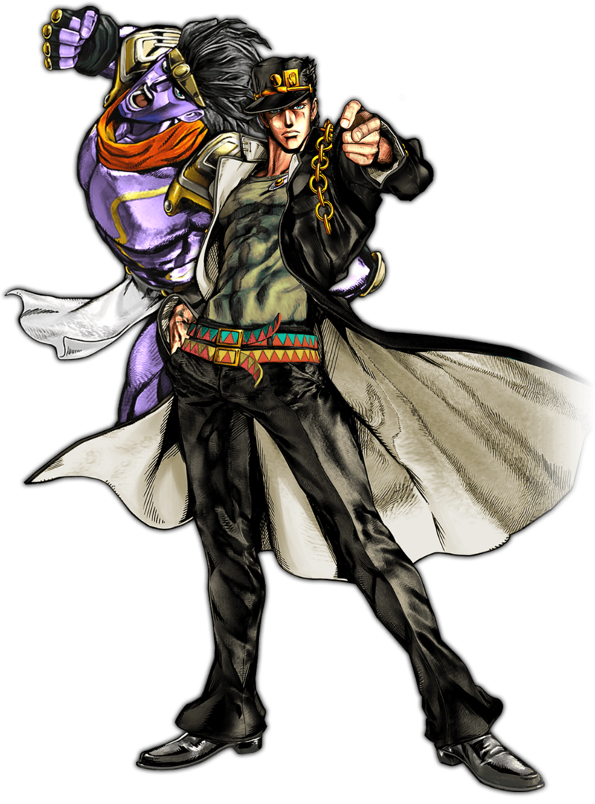
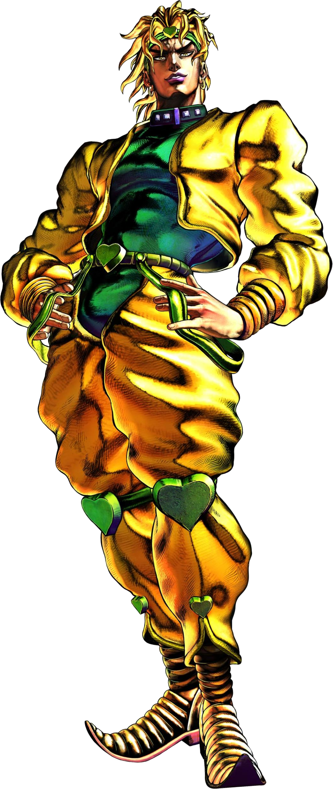
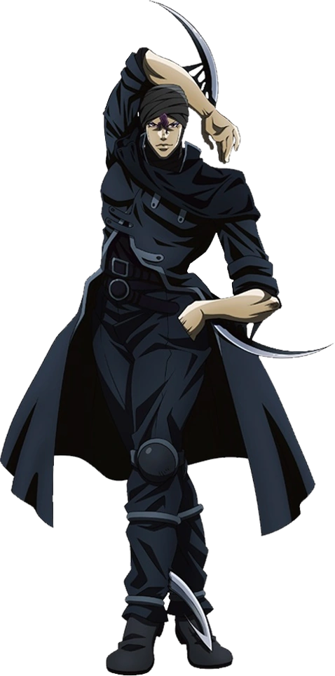
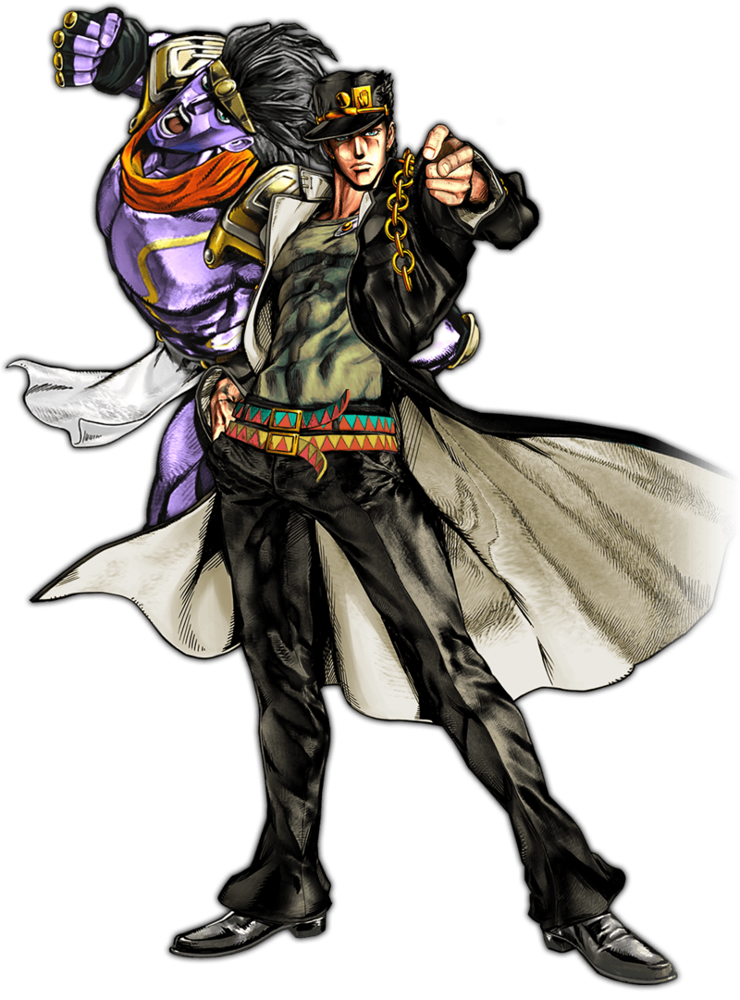
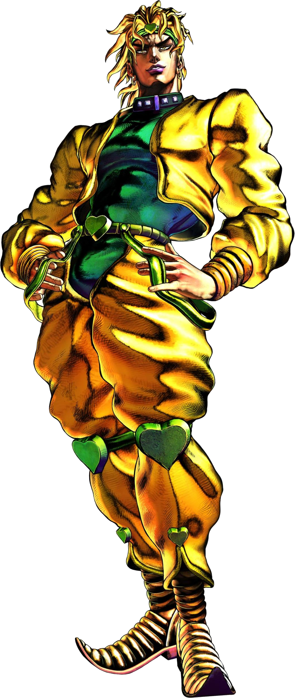
 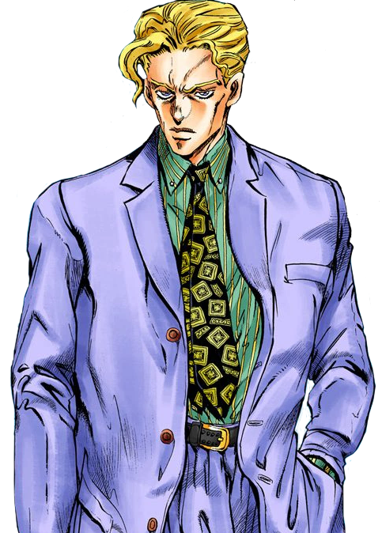
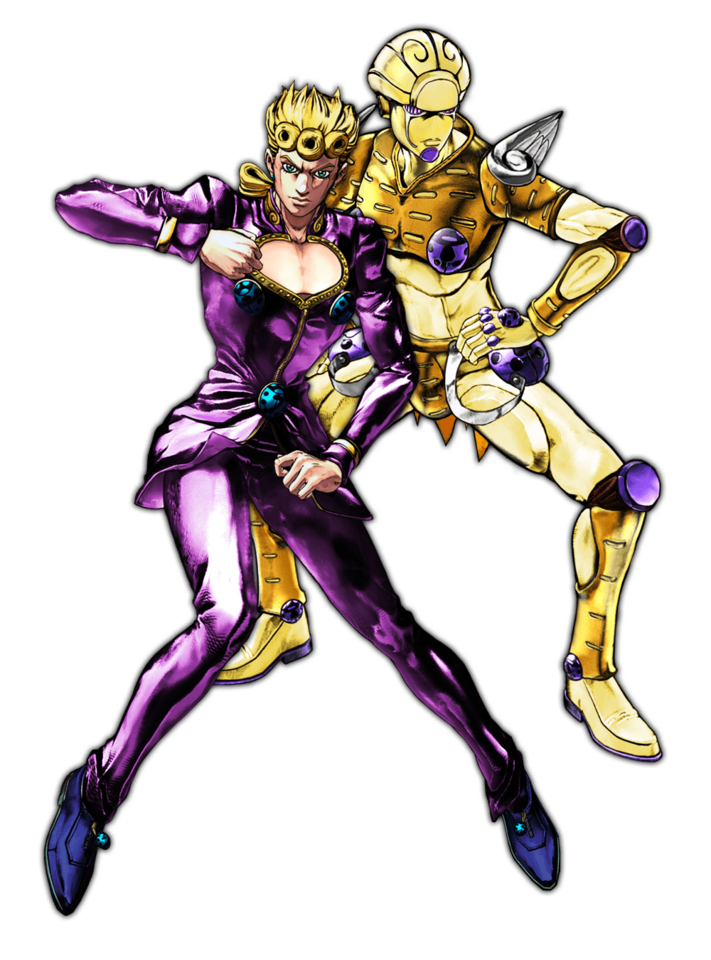
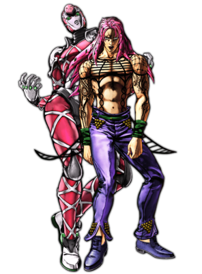
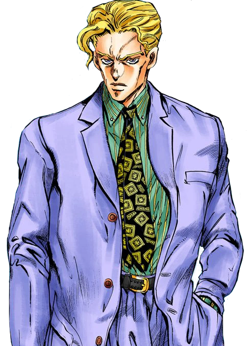
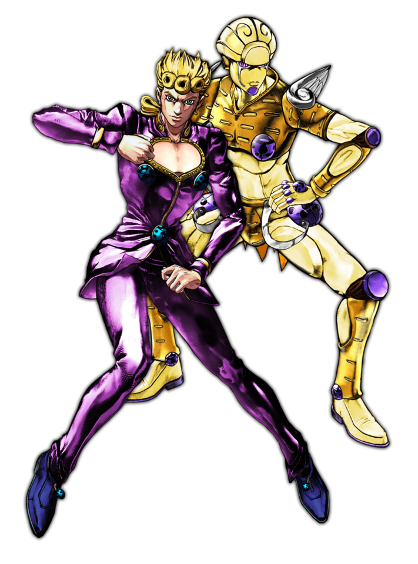
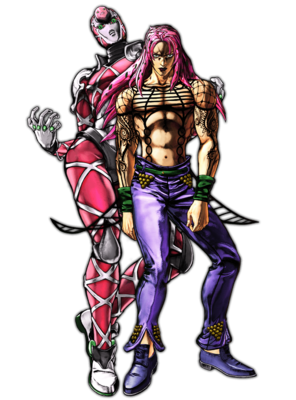
 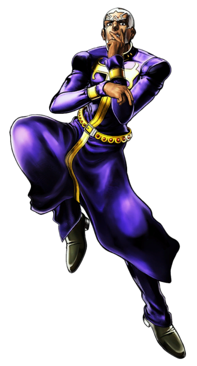
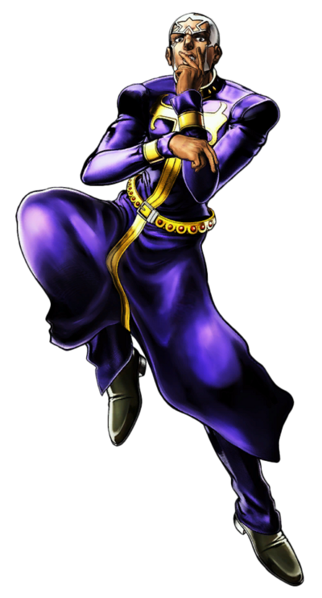